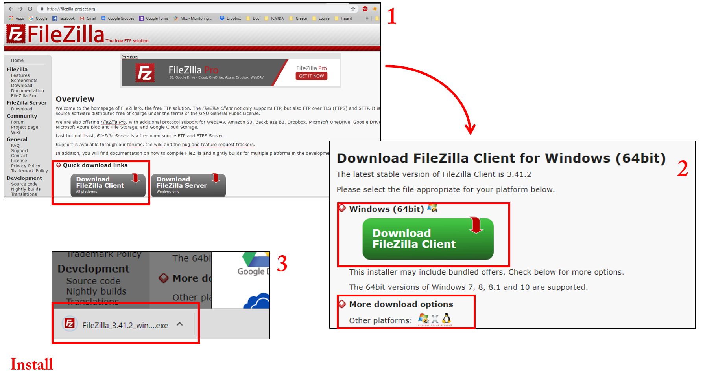
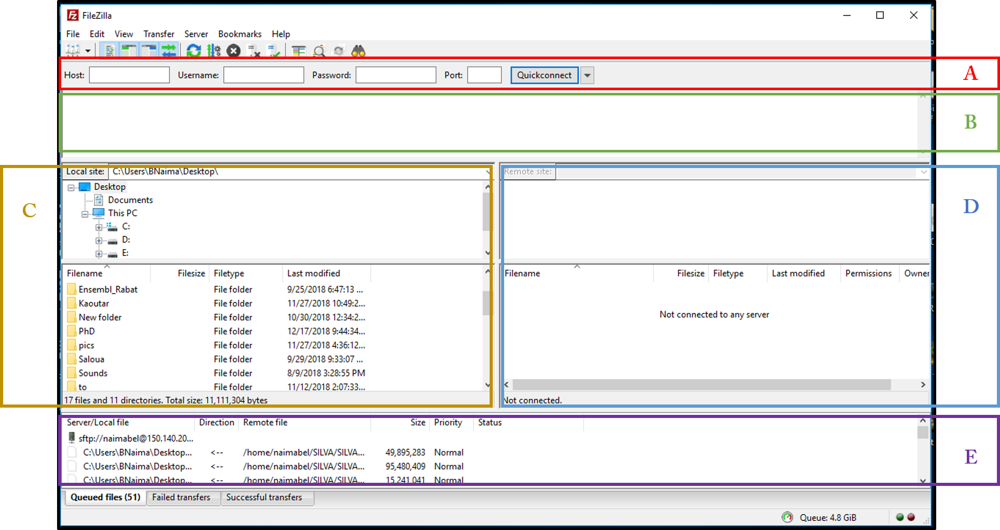
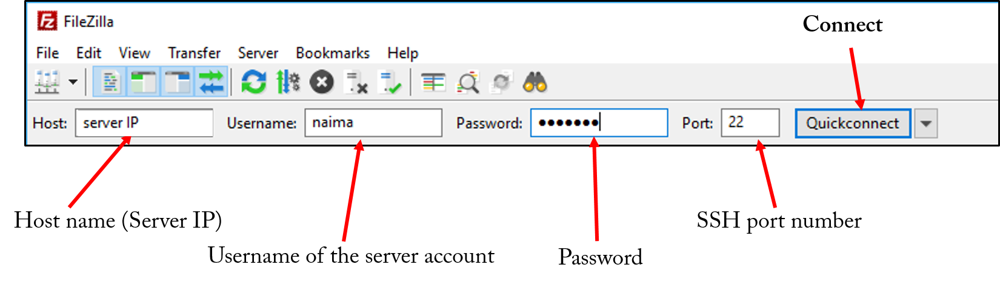
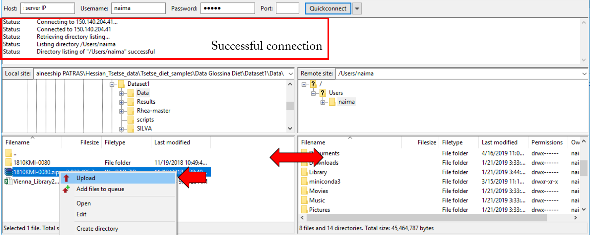

It may occur to work in different worksatation (server) rather than your personnal computer, in this case, you may need to transfer your data from your personnal computer to the server where the analysis will be done. Two ways are available to do this task: using FilleZilla software or using command line.
Using FilleZilla:
- Download and install Fillezilla client (available for all operating systems)

- FilleZilla interface:

- Quick connect bar
- Connextion status
- Navigation in local computer folders
- Navigation in server folders
- Transfer status
- Connect to the server using SSH protocol

- Upload(Download) files to(from) the server by:
- Double-clicking on the file to transfer
- Right-click on file/folder, Then click on Upload/Download in the popup menu
- Drag and drop files/folders from local machine to the server (or the inverse)

Transfer from Unix to Unix server:
- Open terminal: Ctrl + T
- Navigate to the directory where there are the files to be transferred, using
cd command
- Run the command: scp filetotransfer username@serverip:path/to/destination folder (eg.
scp data.zip naima@10.10.10.10:Desktop/)
- Enter account password
Transfer from Windows to Unix server:
- Open command Prompt (cmd.exe)
- Navigate to the directory where there are the files to be transferred, using
cd command
- Run the command: scp filetotransfer username@serverip:path/to/destination folder (eg.
scp data.zip naima@10.10.10.10:Desktop/)
- Enter account password